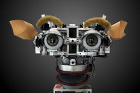

| Artificial Intelligence | Machine Learning |
|---|---|
| Artificial intelligence (AI) is the ability of a computer or a robot controlled by a computer to do tasks that are usually done by humans because they require human intelligence and discernment. | Machine learning is an application of artificial intelligence (AI) that provides systems the ability to automatically learn and improve from experience without being explicitly programmed. |

The path to the future first made way in December 1955 when Herbert Simon and Allen Newell develop the Logic Theorist, the first artificial intelligence program, which eventually would prove 38 of the first 52 theorems in Whitehead and Russell's Principia Mathematica.But it wasn't properly built until 1956 when AI is created by John Mccarthy. The field of AI wasn't formally founded until at that time, at a conference at Dartmouth College, in Hanover, New Hampshire, where the term "artificial intelligence" was coined.
However, despite this well-funded global effort over several decades, computer scientists found it incredibly difficult to create intelligence in machines. To be successful, AI applications (such as vision learning) required the processing of enormous amount of data. Computers were not well-developed enough to process such a large magnitude of data. Governments and corporations were losing faith in AI.
1974–80 then became known as the "AI winter." The field later revived in the 1980s when the British government started funding it again in part to compete with efforts by the Japanese.The field experienced another major winter from 1987 to 1993, coinciding with the collapse of the market for some of the early general-purpose computers, and reduced government funding.
But it was not until the 2000’s that many of the landmark goals were achieved and AI thrived despite lack of government funds and public attention.

Today, the amount of data that is generated, by both humans and machines, far outpaces humans’ ability to absorb, interpret, and make complex decisions based on that data. Artificial intelligence forms the basis for all computer learning and is the future of all complex decision making. As an example, most humans can figure out how to not lose at tic-tac-toe (noughts and crosses), even though there are 255,168 unique moves, of which 46,080 end in a draw. Far fewer folks would be considered grand champions of checkers, with more than 500 x 1018, or 500 quintillion, different potential moves. Computers are extremely efficient at calculating these combinations and permutations to arrive at the best decision. AI (and its logical evolution of machine learning) and deep learning are the foundational future of business decision making.
Applications of AI can be seen in everyday scenarios such as financial services fraud detection, retail purchase predictions, and online customer support interactions. Here are just a few examples: